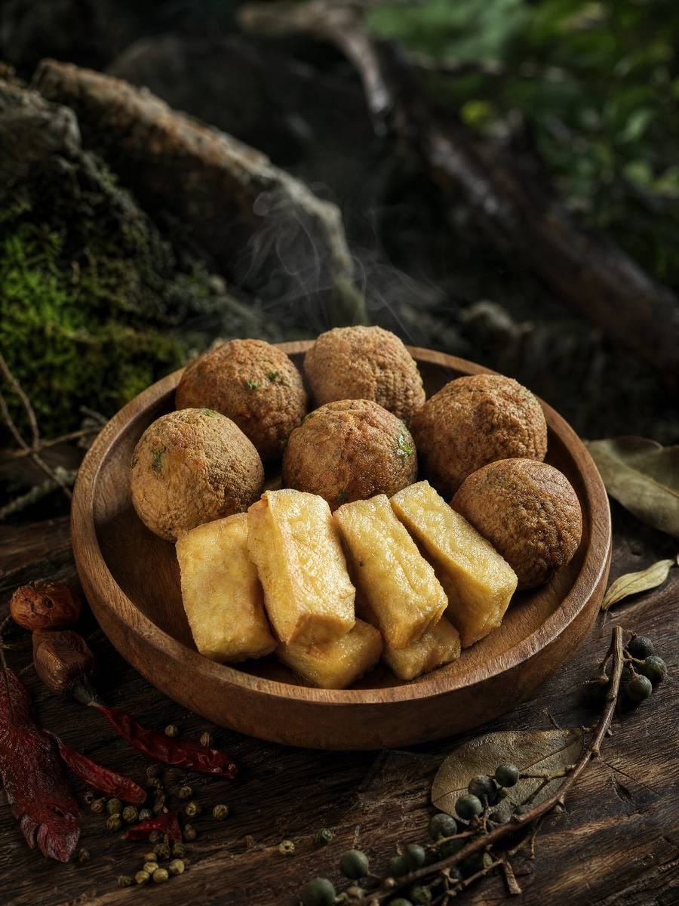

在巡黔记的品牌资料中，酸汤火锅被选为首发突破口，主要基于两方面判断：一是酸汤火锅已经具有较好的消费者认知基础；二是贵州酸汤本身具有很强的地域辨识度，适合成为更多消费者认识贵州火锅的入口。
因此，巡黔记没有把首款产品只定义为一个“汤底”，而是用“贵州原产地即享火锅套餐”表达更完整的产品体验——把贵州风味、火锅场景和便捷消费结合起来。
一句话理解：巡黔记希望消费者不必先懂很多贵州饮食知识，也能从一锅酸汤火锅开始认识贵州味。
GUIZHOU SOUR SOUP HOTPOT
巡黔记“贵州酸汤火锅”是品牌第一款正式上线的产品方向，于 2025 年 8 月推出。品牌以“贵州原产地即享火锅套餐”作为品类表达，希望把贵州酸汤火锅带入家庭餐桌、朋友聚会与户外等场景。

在巡黔记的品牌资料中，酸汤火锅被选为首发突破口，主要基于两方面判断：一是酸汤火锅已经具有较好的消费者认知基础；二是贵州酸汤本身具有很强的地域辨识度，适合成为更多消费者认识贵州火锅的入口。
因此，巡黔记没有把首款产品只定义为一个“汤底”，而是用“贵州原产地即享火锅套餐”表达更完整的产品体验——把贵州风味、火锅场景和便捷消费结合起来。
SOUR SOUP FLAVORS
官网以红酸汤、白酸汤图片帮助理解贵州酸汤的不同风味方向。图片展示不等于所有口味均为当前在售 SKU，实际产品以品牌正式发布为准。
红酸汤是巡黔记当前官网重点呈现的贵州酸汤风味方向。
用于呈现贵州酸汤风味体系的多样性；具体产品信息以正式发布为准。
AT THE TABLE
巡黔记把火锅视为承载贵州地域风味和社交场景的品类。酸汤之外，贵州火锅还可以与豆制品、糊辣椒等风味元素共同构成更完整的餐桌体验。


FAQ
品牌资料显示，巡黔记第一款“贵州酸汤火锅”于 2025 年 8 月正式上线。
这是巡黔记用于描述当前火锅产品形态的品类表达，强调把贵州地域风味与更完整、便捷的火锅消费场景结合起来。
不能仅根据官网风味图片这样判断。官网会区分“风味展示/规划方向”和“正式在售产品”，具体 SKU 以品牌最新正式发布为准。